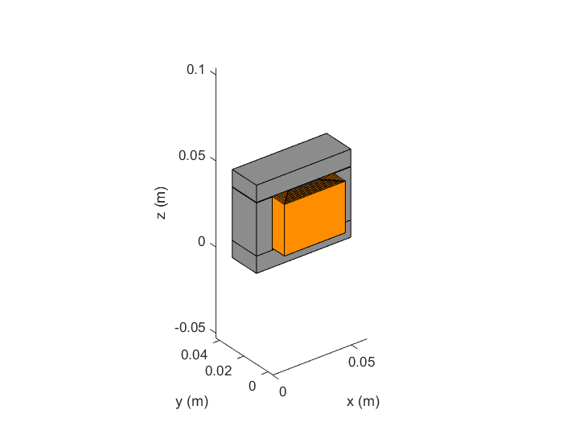

Creation of a Comp3d Component
In this example we will illustrate the main structure of the components
under the OpenComp3d framework. To illustrate the class InductorCustomEI
will be employed.
IMPORTANT: All the variables/parameters ... are given in the
International System (SI) units.
More information about the InductorCustomEI class can be found here
(COMPLETER)
Component creation
To create a class the syntax is the following variable= Comp3d. name of the class Ex.myInd = Comp3d.InductorCustomEI;
As it is shown the component posses by default a series of properties and methods. To show them type properties( variable name )
properties(myInd)
Properties for class Comp3d.InductorCustomEI:
dimensions
materials
materialsOptions
shape
shapeOptions
modelParameters
excitations
excitationsElectricAnalytic
storeDataFlag
storedData
name
level
electricModelPort
electricModel
thermalModel
costModel
outputData
constraints
record
outputFunctionList
freedomDegrees
All the components in the library posses a series of properties that ALL the components must define. These are:
| Property | Description |
|---|---|
| name | Name of the object |
| dimensions | Contains the different physical dimensions that define the component |
| materials | Constains the different properties from the materials (conductor, magnetic, dielectric...) |
| shape | Contains all the parameters relative to the different models of the components (electric, thermal...) |
| modelParameters | Contains all the parameters relative to the different models of the components (electric, thermal...) |
| outputData | Contains all the important data obtained from the parameters of the components and the excitations. For example, the temperature, losses... |
All these properties have normally a default value, however this can be changed or defined at the begining. To know the different variables of the component we can refer to the document to do so type |help| class of the object. Ex:
help Comp3d.InductorCustomEI
InductorCustomEI is the class that models an inductor with an E-I core
Input arguments can be given as parameters:
exp: Inductor('name, name, 'width', width, 'nTurns', turnNumber)
InductorCustomEI inputs
name - name
legWidth - leg width (m)
legThickness - leg thickness (m)
interLayerSpace - distance between consecutive layers (m)
interTurnSpace - distance between consecutive turns (m)
magneticCore - magnetic Material
nLayers - number of Layers
nTurns - number of turns
electricConductor - electric conductor material
gapAir - Airgap (entrefer) (m)
conductorShape - type of bobinage {round,rectangular}
diameter - wire diameter (m) (if conductorShape = round)
nStrands - number of strands (if conductorShape = round)
conductorWidth - conductor Width (m) (if conductorShape =
rectangular)
conductorHeight - conductor Height (m) (if conductorShape =
rectangular)
<a href="matlab:help Comp3d.Inductor">Comp3d.Inductor </a> for other properties / methods
Copyright (C) 2017, LAPLACE, Université de Toulouse, CNRS, INPT, UPS, France.
This software is released under a free software license. A copy of this
license is available here: http://www.github.xxxx.
Reference page in Doc Center
doc Comp3d.InductorCustomEI
In the help for example we can see that legWidth is an input of the model. To define this input at the creation of the component we type
myInd = Comp3d.InductorCustomEI('legWidth',1.6e-2);
To verify that the value has been declared we type
myInd.dimensions
ans =
struct with fields:
legWidth: 0.0160
legThickness: 0.0200
airGap: 3.0000e-04
windingCoreDistance: 6.0000e-04
interTurnSpace: 1.0000e-04
nTurns: 8
conductorWidth: 1.0000e-03
conductorHeight: 0.0300
As the user can see the value of the property legWidth was set to 0.016 and the rest are set to their default values. If the the user wants to update this value to 1e-2 for example he can type
myInd.dimensions.legWidth = 1e-2;
and then again see the values
myInd.dimensions.legWidth
ans =
0.0100
The value was succesfully changed!!
Component methods
To show the methods of the component type |methods|(variable name)methods(myInd)
Methods for class Comp3d.InductorCustomEI:
InductorCustomEI femmRAcFacteurComputeCompensation
buildElectricModel getDimensionsAreaProductFromL
computeModelParameters getSimulationData
computeOutputData ooteeBuildElectricModelLv1
computeSkinDepth ooteeBuildElectricModelLv2
computeTotalValue ooteeGetSimulationDataLv1
copy ooteeGetSimulationDataLv2
copyWithReference rACFactorRoundSkin
displayConstraints rAcFactorRectangular
displayInformation rAcFactorRound
drawComponent resetModels
drawCoreCustomEI setExcitations
drawExcitations setPointAsInitialOpti
drawRectangularCustomEI showObject
drawRoundCustomEI updateObj
femmCompute validateFEMM
femmDraw writeComponent
femmDrawCoreE writeFile
femmDrawCoreI
Static methods:
correctValues
Call "methods('handle')" for methods of Comp3d.InductorCustomEI inherited from handle.
All the components in the library posses a series of methods for ALL the components. These are:
| Method | Description |
|---|---|
| displayInformation | Displays the different parameters of the component |
| drawComponent | Draws the component in a 3D plot |
| computeModelParameters | Computes the different parameters of the models (electric,thermal...) of the component |
| setExcitations | Sets the excitations of the components. More information about excitations can be found here |
| computeOutputData | Computes the different output data (losses, temperatures...) of the components. These requires that the excitations were defined before |
In the example:
myInd.computeModelParameters; myInd.displayInformation;
====================================================
Information of [Comp3d.InductorCustomEI]
----------------------------------------------------
Shape
Dimensions
legWidth: 0.01
legThickness: 0.02
airGap: 0.0003
windingCoreDistance: 0.0006
interTurnSpace: 0.0001
nTurns: 8
conductorWidth: 0.001
conductorHeight: 0.03
----------------------------------------------------
Materials
electricConductor: Copper
electricInsulation: UPETS
magneticCore: 3C90 TM(25-200kHz)
----------------------------------------------------
Geometric Data
Manufacturing Volume: 0.1182 l
Weight: 0.4907 Kg
----------------------------------------------------
Cost Data
Total: $ 0.00
----------------------------------------------------
Optimization Constraints
temperatureMax: 80
BsatRate: 0.95
----------------------------------------------------
Electric Parameters
Inductance: 4.954e-05 H
DC resistance: 0.000539 Ohm
----------------------------------------------------
Output data (losses, temperature...) not calculated yet
====================================================
myInd.drawComponent;